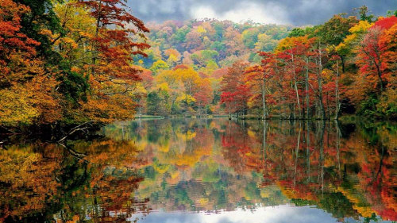

Greenville: Cotton capital of the world
Greenville -- In early years, Hunt County was known as the cotton capital of the world. The world's largest inland cotton compress was located in Greenville until it was destroyed by fire in the mid-1900s. Currently, the largest industry is L3 Mission Integration Division (MID, formerly E-Systems, then Raytheon Intelligence and Information Systems (RIIS, IIS)) a major U.S. Defense contractor located at Majors Airport. This airport, created in 1942 and initially financed by the local Rotary club, was used as a training base for P-47 Thunderbolt fighter pilots in World War II, and since then has served as a focal point for economic growth in Greenville. Tourism is playing an increasing role in the local economy with attractions such as Collin Street Bakery and Splash Kingdom Water Park located on Interstate 30, and the redeveloping historic downtown featuring Landon Winery and the restored vintage Texan Theater, which opened in 2014. Tourism promotion has been under the wing of the Greenville Chamber of Commerce / Convention and Visitors Bureau and the City of Greenville, which took over CVB duties in 2014. Greenville is also known for its saddle making industry.